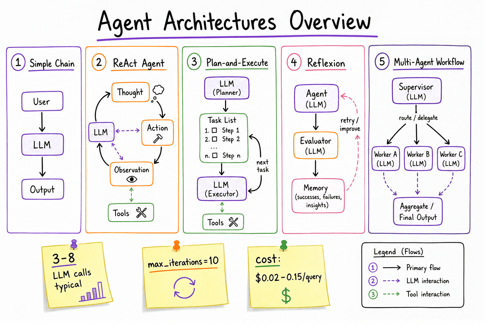
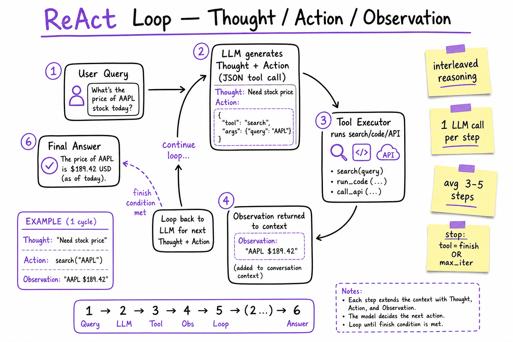
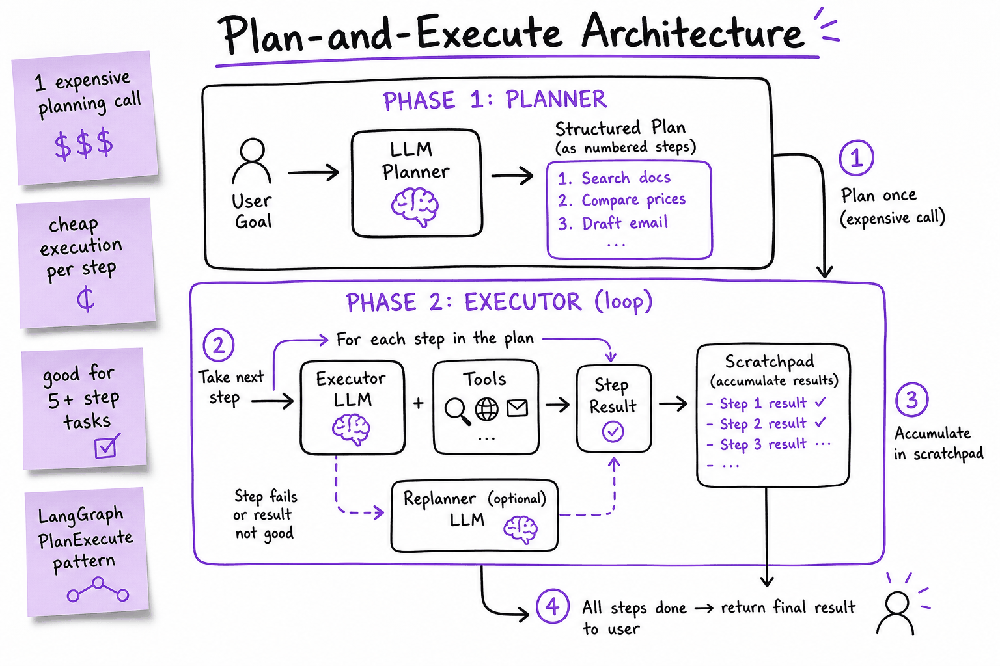

What an agent is // Tools & agents
Agents vs agentic AI, what makes something an agent, workflows vs agents, and agent architectures.
01 — At a glance
How LLMs decide what to do next: ReAct interleaves reasoning with tool calls, Plan-and-Execute separates planning from execution, Reflexion adds self-critique loops. Know when a simple chain beats an agent, and how to terminate loops safely.

Five patterns on one whiteboard: linear chain (1 LLM call), ReAct loop (thought→action→observation), Plan-and-Execute (planner + executor), Reflexion (agent + evaluator + memory), and supervisor multi-agent workflow.
02 — New words
| Word | Meaning |
|---|---|
| Workflow | Hard-coded steps; the LLM fills in blanks (vs agent control flow). |
| ReAct | Interleave reasoning and tool actions each step. |
| Plan-and-execute | Plan fully, then execute, re-planning as needed. |
Quick reference
03 — What & Why
An agent is an LLM wrapped in a control loop: it observes state, decides the next action (often a tool call), executes it, and repeats until the task is done. The architecture you choose determines latency, cost, reliability, and debuggability.
Functional requirements
- Answer multi-step questions requiring external data (search, DB, APIs)
- Execute actions on behalf of the user (send email, create ticket, run code)
- Recover from tool errors and adapt when intermediate results change the plan
- Produce a final structured or natural-language answer with citations
Non-functional requirements
- Latency: p95 < 15s for interactive chat; each LLM call adds 1–4s
- Cost: budget per query ($0.01–$0.50); cap LLM calls at 5–15
- Reliability: graceful termination; no infinite loops
- Observability: trace every thought, action, observation for debugging
- Safety: tool allowlists, human approval for destructive actions
Key insight: most production "agents" are not autonomous generalists — they are bounded loops with 3–8 tool calls, hard termination, and a fallback to human escalation.
04 — Core Concepts
| Term | Definition | Gotcha |
|---|---|---|
| Agent | LLM + control loop + tools. Decides its own next step. | Not every LLM app is an agent. If the flow is fixed, it's a chain. |
| Chain | Fixed pipeline: prompt → LLM → parse → next step. No runtime branching. | Cheaper and more predictable. Use when steps are known upfront. |
| Workflow | Explicit state machine / DAG with conditional edges. Human-designed control flow. | LangGraph, Temporal. Best when business logic is rigid. |
| ReAct | Reason + Act: LLM emits Thought, Action (tool), reads Observation, repeats. | Context grows with every step; summarize or truncate old observations. |
| Plan-and-Execute | Planner LLM writes a step list; executor LLM runs each step with tools. | Plan can go stale mid-execution; add replanning on failure. |
| Reflexion | After failure, evaluator generates critique stored in memory; agent retries. | Extra LLM calls; cap trials at 2–3 to control cost. |
| Tool-use loop | Generic pattern: LLM ↔ tool executor until no more tool calls. | OpenAI/Anthropic native function calling implements this directly. |
| Scratchpad | Working memory: accumulated thoughts, observations, intermediate results. | Don't dump raw tool JSON into user-facing output. |
| Termination | Conditions that stop the loop: final answer, max iterations, timeout, budget. | Always set max_iterations. LLMs rarely stop on their own. |
| HITL | Human-in-the-loop: pause for approval before destructive tool calls. | Production agents for write actions almost always need this. |
05 — API / Interface Surface
OpenAI-style tool-use loop
response = client.chat.completions.create(
model="gpt-4o",
messages=messages,
tools=[{"type": "function", "function": search_tool_schema}],
tool_choice="auto",
)
# If response has tool_calls → execute tools → append tool results → loop
# If response has content and no tool_calls → return final answer
LangGraph agent (ReAct-style)
from langgraph.prebuilt import create_react_agent
agent = create_react_agent(model, tools=[search, calculator])
result = agent.invoke({"messages": [("user", "What's AAPL revenue vs MSFT?")]})
# Internally: LLM → tool_call → ToolNode → LLM → ... → END
Plan-and-Execute (LangChain)
from langchain_experimental.plan_and_execute import PlanAndExecute, load_agent_executor, load_chat_planner
planner = load_chat_planner(llm)
executor = load_agent_executor(llm, tools, verbose=True)
agent = PlanAndExecute(planner=planner, executor=executor, verbose=True)
agent.run("Research competitors and draft a comparison table")
Agent config surface (what you expose)
AgentConfig: max_iterations: int = 10 # hard loop cap timeout_seconds: float = 30.0 cost_budget_usd: float = 0.25 allowed_tools: list[str] # allowlist require_approval: list[str] # ["send_email", "delete_record"] termination_tool: str = "finish" # explicit stop signal
See Tool calling for JSON schema design, parallel tool calls, and error handling contracts.
06 — When to Use / When NOT
| Pattern | Use when | Don't use when | Typical cost |
|---|---|---|---|
| Chain | Steps are fixed and known (RAG → summarize → format). No branching. | User query requires dynamic tool selection or multi-hop reasoning. | 1–2 LLM calls |
| Tool-use loop | 1–5 tool calls, model picks tools at runtime. Most chatbots with search/calc. | Complex multi-phase tasks where upfront planning saves calls. | 2–6 LLM calls |
| ReAct | Need visible reasoning trace. Debugging matters. Research / analysis tasks. | Latency-sensitive (<3s). Reasoning tokens add cost with no user benefit. | 3–8 LLM calls |
| Plan-and-Execute | 5+ step tasks (research report, multi-doc comparison). Plan is reusable/cached. | Simple Q&A. Planning overhead exceeds benefit. | 1 plan + N execute calls |
| Reflexion | Code generation, eval-driven tasks where retry with critique helps. | Real-time chat. 2–3x cost multiplier per retry. | 2–4x base agent cost |
| Workflow (LangGraph DAG) | Business rules are rigid (approve → execute → notify). Compliance audit trail. | Exploratory tasks where path can't be predetermined. | Fixed per path |
| Multi-agent | Distinct roles (researcher + writer + reviewer). Parallelizable subtasks. | Single-domain tasks. Coordination overhead > benefit. | 3–10+ LLM calls |
Decision rule: start with a chain. Add a tool-use loop when you need 1–3 dynamic tool calls. Promote to ReAct or Plan-and-Execute only when you observe the simpler pattern failing in eval. Use a workflow when compliance requires deterministic control flow.
07 — Architecture
User Query
|
v
+-----------------------------------+
| Orchestrator (agent runner) |
| - loads config (max_iter, tools) |
| - manages scratchpad / messages |
| - checks termination conditions |
+-----------------------------------+
|
v
+-----------------------------------+
| LLM (policy) |
| - reads messages + tool schemas |
| - outputs: text OR tool_call(s) |
+-----------------------------------+
|
+--- no tool calls ---> Final Answer
|
v (tool calls)
+-----------------------------------+
| Tool Executor |
| - validate args, check allowlist |
| - run sync/async, handle errors |
| - return Observation to scratchpad|
+-----------------------------------+
|
+--- termination met? ---> Final Answer
|
+--- else ---> loop back to LLM
The orchestrator is the production-critical layer: it enforces budgets, logs traces, handles HITL pauses, and decides when to force-stop and return a partial answer.
08 — ReAct (Reason + Act)
ReAct interleaves natural-language reasoning with tool actions. The LLM explicitly writes a Thought before each Action, making the decision process inspectable.
search("AAPL stock price today")# ReAct prompt skeleton (Yao et al. 2022) Answer the question using interleaved Thought, Action, Observation steps. Thought: [reason about current state] Action: [tool_name(args)] Observation: [tool result — injected by system, NOT written by LLM] ... Thought: I now have enough information. Final Answer: [response to user]
When it wins: research tasks, debugging agent behavior, tasks where the path is unpredictable. When it loses: the Thought tokens add 20–40% cost with no accuracy gain if the task is straightforward tool selection.

ReAct hot path: each iteration is one LLM call. The system injects Observations; the model never hallucinates tool results. Average 3–5 iterations for multi-hop queries.
09 — Plan-and-Execute
Split the problem into two LLM roles: a Planner (expensive, runs once) and an Executor (cheaper, runs per step). The plan is a structured list the executor follows.
Phases
- Plan: Planner LLM decomposes the goal into 3–10 steps. Output is a numbered list or JSON plan.
- Execute: For each step, Executor LLM + tools runs independently. Results accumulate in a scratchpad.
- Replan (optional): If a step fails or returns unexpected data, invoke Planner again with current state.
- Synthesize: Final LLM call combines step results into the user-facing answer.
# Example plan output Plan: 1. Search internal docs for "refund policy" 2. Search CRM for customer order #12345 3. Compare policy against order status 4. Draft refund recommendation email
vs ReAct: Plan-and-Execute front-loads reasoning (1 big call) then runs cheap execution steps. Better when you can predict the shape of the task. ReAct adapts step-by-step but pays an LLM call per decision.

Two-phase architecture: Planner produces structured steps; Executor runs each with tools. Replanning arrow handles stale plans when intermediate results change the approach.
10 — Reflexion
Reflexion adds a self-evaluation loop: after the agent produces an answer (or fails), an Evaluator LLM critiques it. The critique is stored in episodic memory and fed back on the next attempt.
# Reflexion memory entry
{
"trial": 1,
"failure_reason": "Hallucinated API endpoint /v2/users",
"reflection": "Always call list_tools first; never invent URLs.",
"score": 0.2
}
Best for: code generation (run tests as evaluator), structured output with verifiable constraints, tasks with golden-set eval. Avoid for: latency-sensitive chat where "good enough" first try is acceptable.
11 — Tool-Use Loop
The tool-use loop is the minimal agent pattern — no explicit Thought tokens, just native function calling:
messages = [{"role": "user", "content": query}]
for i in range(max_iterations):
response = llm.chat(messages, tools=tool_schemas)
if not response.tool_calls:
return response.content # done
for call in response.tool_calls:
result = execute_tool(call.name, call.args)
messages.append(tool_result(call.id, result))
return fallback_partial_answer(messages) # hit max_iter
Production enhancements
| Enhancement | Why |
|---|---|
| Parallel tool calls | Model requests search + calculator simultaneously. Cuts latency 30–50%. |
| Tool result truncation | Search returns 10KB; summarize or top-3 before injecting into context. |
| Structured error responses | Return {"error": "not_found", "retry_hint": "..."} so LLM can recover. |
| Idempotent tools | Agent may retry the same call. Tools must be safe to re-invoke. |
| Tool routing | Pre-filter tools by intent (embed query, pick top-5 relevant tools from 50+). |
Most production agents are tool-use loops with good termination — not full ReAct. ReAct is primarily valuable for observability during development.
12 — Termination Conditions
Agents don't stop reliably on their own. You must implement multiple layered stop conditions:
| Condition | Implementation | Priority |
|---|---|---|
| Natural stop | LLM returns text with no tool_calls, or calls a finish tool. | Preferred path |
| Max iterations | max_iterations=10 (hard cap). Return partial answer + "I ran out of steps." | Always required |
| Timeout | Wall-clock timeout_seconds=30. Cancel in-flight tool calls. | Always required |
| Cost budget | Track token spend; stop when cost_budget_usd exceeded. | Production essential |
| Duplicate detection | Same tool + same args called twice → force stop. Prevents infinite search loops. | Strongly recommended |
| Stagnation | No new information in last 2 observations → stop and summarize. | Recommended |
| HITL timeout | User approval not received in 5 min → cancel action, notify. | For write/destructive tools |
| Circuit breaker | Tool error rate > 50% in last 3 calls → abort, escalate to human. | Production essential |
# Termination check (orchestrator pseudocode)
def should_stop(state) -> bool:
if state.iteration >= config.max_iterations: return True
if time.monotonic() - state.start > config.timeout: return True
if state.cost_usd > config.cost_budget: return True
if state.last_response.has_no_tool_calls(): return True
if state.duplicate_action_detected(): return True
if state.observations_unchanged(steps=2): return True
return False
The full explanation
13 — AI agents vs Agentic AI
These two terms get used interchangeably, but there's a useful distinction: one is a component, the other is a paradigm built out of those components.
TL;DR
AI Agent = a single autonomous program (LLM + tools + a loop) doing a bounded task. Agentic AI = a system where multiple agents + orchestration + memory + planning coordinate toward complex, open-ended goals. Think "a worker" vs "an organization of workers with a manager, shared memory, and a workflow."14 — Clean definitions
AI Agent (the building block)
A discrete entity that perceives → reasons → acts in a loop for a specific goal. One context, a defined toolset, bounded autonomy. This is the agent loop in the next topics. e.g. a support bot that looks up orders; a coding assistant.
Agentic AI (the paradigm/system)
A higher-order system with agency at the system level: multiple specialized agents collaborating, an orchestrator decomposing goals dynamically, persistent shared memory, emergent coordination. e.g. a deep-research system; an "AI software team" of planner+coder+reviewer.
| Dimension | AI Agent | Agentic AI |
|---|---|---|
| Unit | one agent | a system of many agents |
| Scope | a bounded task | complex, multi-step, open-ended goals |
| Structure | single loop & context | orchestration, handoffs, sub-agents |
| Autonomy | task-scoped | higher; dynamic planning & decomposition |
| Memory | usually per-session | often persistent & shared across agents |
| Coordination | none (it's alone) | core feature (manager/workers, debate, pipelines) |
| Failure surface | one loop can stall or hallucinate | all of that, plus coordination bugs: duplicated work, lost handoffs, agents contradicting each other |
| Maps to | the agent loop | Multi-agent systems (multi-agent) + Production & evals (architectures) |
15 — It's a spectrum, not a binary
single LLM call → workflow → ONE agent (AI agent) → multi-agent system (Agentic AI) → autonomous agent org less autonomy / simpler / cheaper ───────────────────────────────► more autonomy / complex / costlier
Every position on this line is a legitimate engineering choice. The mistake is treating the right end as "more advanced" and therefore better. Each step right trades away three things you will miss in production: predictability (can you write a test that always passes?), debuggability (can you point at the line that made the decision?), and cost ceiling (do you know the worst-case token bill before you run it?). A single LLM call has all three. An autonomous agent org has none of them by default — you have to engineer them back in.
16 — Three real systems, placed on the spectrum
Definitions are cheap; placement is the skill. Here are three systems you have probably used or built, walked through end to end, with the reasoning for where each one sits.
1. Support-ticket triage — a workflow (left of "agent")
The task: incoming ticket → categorize → draft a reply for the human queue. The pipeline is three LLM calls with hard-coded control flow:
def triage(ticket: str) -> dict: # step 1: classify — fixed, always runs cat = llm(f"Classify into billing|bug|howto|other. Ticket:\n{ticket}\nCategory:").strip() if cat == "billing": ctx = billing_db.lookup(extract_account_id(ticket)) # deterministic lookup elif cat == "bug": ctx = search_known_issues(ticket, k=3) # RAG, fixed k else: ctx = kb_search(ticket, k=3) # step 2: draft — fixed, always runs exactly once draft = llm(f"Context:\n{ctx}\n\nDraft a reply to:\n{ticket}") return {"category": cat, "draft": draft} # human reviews before send
Why it's a workflow, not an agent: the LLM never chooses what happens next. It fills two blanks (a label, a paragraph) inside a shape you wrote. There is no loop — the call graph is identical for every ticket. That's exactly right for this task: ticket volume is high (say 10,000/day), the path is known, and you want the p95 latency and the daily bill to be constants. Illustrative arithmetic: ~2 calls × ~1,500 input + 300 output tokens each; at an assumed $3/M input and $15/M output that's about $0.018 per ticket, $180/day — knowable in advance, which a real agent never is.
2. A coding assistant — one AI agent (the middle)
The task: "fix the failing test in test_billing.py." Nobody can hard-code this path, because the path is the diagnosis. The model must decide: read which file? run which command? edit what? re-run tests? Its trace might look like:
goal: fix failing test └► run_tests() → 1 failure: test_refund_rounding └► read_file(billing.py) → sees round() on line 142 └► edit_file(billing.py) → switch to Decimal quantize └► run_tests() → all pass └► DONE (model decides, not you)
Why it's an agent: the LLM owns the control flow — it picked those four actions and their order, and a different bug produces a different trace. But it's still one agent: one context window, one toolset (read/edit/run), one bounded goal, session-scoped memory. When the loop exits, nothing persists. This is the sweet spot for tasks where the path is unpredictable but the goal is checkable (tests pass = done), so the loop has a natural stop condition.
3. A deep-research system — Agentic AI (the right side)
The task: "produce a competitive analysis of vector database vendors." One agent with web search could try, but it would drown: dozens of sources, each 5–20k tokens, quickly overflowing a single context window. The production shape is a system:
┌────────────┐
user goal ──►│ ORCHESTRATOR│ decomposes: 6 vendors → 6 research briefs
└─────┬──────┘
┌──────────┬───────┼────────┬──────────┐
▼ ▼ ▼ ▼ ▼
[researcher][researcher][researcher] ... (parallel, own contexts)
│ │ │ │ │
└────── distilled 800-token summaries ─┘
┌─────▼──────┐ ┌──────────────┐
│ SYNTHESIZER│◄────►│ shared memory │ (notes file / DB)
└─────┬──────┘ └──────────────┘
▼
final report → CRITIC agent → revision → done
Why it's Agentic AI, not just "a big agent": agency exists at the system level. The orchestrator decides how many workers to spawn and what each investigates (dynamic decomposition). Workers run in isolated contexts and coordinate through shared memory rather than one window. A critic agent gates the output. No single loop "is" the system — remove any one agent and the others still have their own perceive→reason→act cycles. This is also where the bills get real: illustratively, 6 researchers × ~15 searches × ~8k tokens ingested each ≈ 700k+ input tokens before synthesis even starts — one to two orders of magnitude more than the coding agent, three more than the triage workflow.
The placement test
Ask two questions. (1) Who decides the next step? You → workflow. The model → agent. (2) How many contexts are reasoning at once? One → AI agent. Several, coordinating → Agentic AI. Triage fails test 1 (you decide). The coding assistant passes 1, fails 2 (one context). Deep research passes both.17 — What moving right actually costs
A worked comparison on the same task — "answer a customer question about their invoice" — implemented at three points on the spectrum. Numbers are illustrative but the ratios are what you'll see in practice:
| Implementation | LLM calls | Tokens (typical) | Latency | Cost/query (assumed $3/$15 per M) | Debuggable? |
|---|---|---|---|---|---|
| Single call + invoice pasted in | 1 | 2k in / 300 out | ~2 s | ~$0.011 | trivially |
| Workflow (classify → lookup → draft) | 2 | 3k in / 500 out | ~4 s | ~$0.017 | yes — fixed path |
| Agent with billing tools | 3–8 (varies!) | 10–40k in / 1–3k out | 8–45 s | ~$0.05–$0.16 | needs tracing infra |
The agent version is 5–15× the cost and its variance is the real problem: you can't put "8 to 45 seconds" in an SLA. But if 20% of questions genuinely need multi-step investigation ("why was I charged twice, and was the refund processed?"), the agent handles the cases the workflow bounces to a human — and one human escalation costs more than a thousand agent runs. The right answer is often route: workflow for the 80%, agent for the flagged 20%. That's itself a hint that real systems live at multiple points of the spectrum simultaneously.
Terminology is fuzzy in the wild
Vendors use "agentic AI" loosely (often just "has an agent in it"). The crisp split above comes from recent academic taxonomies — useful for thinking, but don't assume everyone means it precisely. Two more traps: (1) a workflow with many LLM calls is still not an agent — call count doesn't matter, who owns control flow does; (2) a single agent that spawns throwaway sub-tasks (e.g. "summarize this page" helpers) is not yet Agentic AI — the helpers have no agency, they're just function calls that happen to use an LLM. The engineering rule still holds: move right on the spectrum only when the task forces you to.Mini-scenario: the demo that didn't survive contact
You build a "sales-ops agentic AI": a planner agent, a CRM agent, an email-drafting agent, shared memory. The demo is stunning. In week two of production, the planner starts assigning the CRM agent tasks phrased slightly differently each run; 4% of the time the CRM agent interprets "update the opp" as creating a duplicate opportunity. No single agent is wrong — the handoff contract was never specified. You spend a sprint replacing free-text handoffs with a typed schema, then realize 3 of the 4 flows had fixed paths all along and quietly rewrite them as workflows. The remaining genuinely open-ended flow keeps its agents. This is the normal life cycle: systems drift left on the spectrum as you understand the task better.18 — How to choose, quickly
- Path known, output shape known → workflow. Most production LLM systems should end up here.
- Path unknown, goal checkable (tests pass, ticket resolved, record updated) → single agent with a step budget.
- Path unknown AND the work exceeds one context window or needs parallel specialization → agentic system. Enter with tracing, budgets, and typed handoffs from day one — retrofitting them is miserable.
- Unsure → build the workflow first. You'll learn the task's real structure, and the workflow becomes the fallback path when the agent misbehaves.
Exercises
- Take three LLM-powered products you use (e.g. an IDE assistant, a chat search product, an email autocomplete). Place each on the spectrum and write one sentence of justification using the two placement-test questions.
- Implement the triage workflow above with a real LLM API and 10 sample tickets. Measure tokens per ticket and compute the daily cost at 10k tickets/day for your provider's actual prices.
- Sketch (boxes and arrows, no code) how you would convert the triage workflow into a single agent. List every new failure mode you just introduced and what budget/guardrail addresses each.
- For the deep-research system, estimate total input tokens if the orchestrator spawns 10 researchers, each reading 12 pages averaging 6k tokens. At $3/M input, what does one report cost before synthesis? Would per-worker page caps change the architecture?
- Find one vendor page or blog post that uses "agentic AI." Decide whether the described system passes placement-test question 2 (multiple coordinating contexts). Defend your verdict in three sentences.
19 — What makes something an "agent"
The word is overused. Here's the crisp, useful definition the top labs converge on.
Definition
An agent is a system where the LLM decides the control flow: given a goal, it chooses actions (tool calls), observes results, and loops until done. A workflow is where you hard-code the steps and the LLM just fills in blanks.20 — Workflow vs agent — the fork that matters
Workflow
You own the control flow. Predictable, cheap, easy to debug. Example: classify → if billing, route to template A. Most production systems should be this.
Agent
The LLM owns the control flow — picks tools, decides when it's done. Flexible but slower, costlier, less predictable. Use for open-ended, unknown-path tasks.
Notice what the definition does not mention: tool use, number of LLM calls, streaming, memory, "autonomy" as a vibe. A system with ten chained LLM calls and five tools is still a workflow if Python decides the order. A system with one tool is an agent if the model decides whether and when to call it, and whether to call it again. The single diagnostic question: if the model's output changed, could the shape of the execution change? If yes — different tools, different order, different number of steps — the model owns control flow and you have an agent.
21 — Four real tasks, classified
The definition earns its keep only if it makes decisions for you. Here are four tasks from real product surfaces, each walked through the same three checks: (a) is the path known in advance? (b) is there a checkable done-condition? (c) what does a wrong turn cost?
Task 1: "Summarize every ticket closed this week into a Monday report"
(a) Path fully known: fetch tickets → summarize each → group by theme → render template. The same steps every Monday, regardless of content. (b) Done = template filled. (c) A wrong turn is impossible if there are no turns.
Verdict: workflow. This one isn't close. People reach for agents here because "it reads tickets and writes a report" sounds autonomous — but the autonomy is entirely in the wording, not the task. Map-reduce over tickets with two prompt templates. Anything more is spend without return.
Task 2: "Find and fix the root cause of this failing CI pipeline"
(a) Path unknowable: the failure could be a flaky test, a dependency bump, a bad merge, an infra timeout. Diagnosis is the task; each observation determines the next action. (b) Done-condition is crisp and machine-checkable: the pipeline goes green. (c) A wrong turn wastes tokens but the CI system itself prevents damage (nothing merges while red).
Verdict: agent. Unpredictable path + verifiable goal + cheap wrong turns is the agent trifecta. Give it read-logs, read-file, edit-file, run-pipeline tools, a step budget of ~15, and let it loop.
Task 3: "Refund this customer if they qualify under policy"
(a) The path is mostly known: pull order → pull policy clauses → check eligibility → execute or decline. Occasionally there's ambiguity (partial use, currency edge cases). (b) Done = refund executed or declined with reason. (c) Here's the kicker — a wrong turn moves money.
Verdict: workflow, on the strength of check (c) alone. Even though an agent could handle the ambiguous 5% more gracefully, you do not want a model deciding control flow around an irreversible financial action. Structure it as: workflow computes eligibility with the LLM filling extraction/interpretation blanks; ambiguous cases route to a human queue, never to more model autonomy. The general rule: irreversibility pushes you toward workflow, because workflows put the dangerous step behind a gate you wrote.
Task 4: "Onboard this new vendor: collect docs, validate them, create records in three systems"
(a) The happy path is known, but reality diverges constantly: docs arrive malformed, one of the three systems rejects a record, tax IDs fail validation, the vendor emails back questions. (b) Done-condition is checkable (three records exist, all validations pass) but arrives over days, not seconds. (c) Wrong turns are recoverable but annoying (duplicate records, confused vendors).
Verdict: workflow skeleton with agent pockets. The top-level state machine (collect → validate → create → confirm) belongs to you: it's durable, resumable, auditable across days. Inside two states, the path is genuinely unpredictable — "figure out why System B rejected this record and fix the payload" — and those become bounded agent calls with their own budgets. This hybrid is what most serious production systems converge on: deterministic spine, agentic joints.
| Task | Path known? | Checkable done? | Wrong-turn cost | Verdict |
|---|---|---|---|---|
| Weekly ticket report | fully | yes | zero | workflow |
| Fix failing CI | no | yes (green build) | low, contained | agent |
| Policy refund | mostly | yes | irreversible $ | workflow + human queue |
| Vendor onboarding | happy path only | yes, slow | recoverable mess | workflow spine, agent pockets |
22 — The arithmetic: same task, both ways
Take Task 2's little sibling — "why is this one test failing?" — and cost both implementations. Numbers are illustrative (assume $3/M input, $15/M output, ~1.5 s per LLM round-trip plus tool time).
def diagnose_workflow(test_name: str) -> str: log = run_single_test(test_name) # tool, no LLM: ~2 s src = read_test_source(test_name) # tool: ~0 s blame = git_log_touching(test_name, n=5) # tool: ~1 s # ONE llm call with everything pre-gathered return llm(f"""Test log:\n{log[:4000]}\n\nTest source:\n{src[:3000]} Recent commits:\n{blame}\n\nDiagnose the root cause and propose a fix.""")
Workflow cost: 1 LLM call. Input ≈ 4k (log) + 3k (source) + 1k (commits) + 0.5k (framing) ≈ 8.5k tokens; output ≈ 600. Cost ≈ 8,500×$3/M + 600×$15/M ≈ $0.035. Latency ≈ 3 s tools + ~6 s generation ≈ ~9 s, every time. But: it only works when the answer is findable in the three things you pre-decided to gather. If the bug is in a fixture file the test imports, this workflow is structurally blind to it.
TOOLS = [run_single_test, read_file, git_log_touching, grep_repo] def diagnose_agent(test_name: str) -> str: return run_agent( # the loop from the next topic user_msg=f"Diagnose the root cause of failing test {test_name}. " f"Investigate with the tools, then state cause and fix.", tools=schemas(TOOLS), impls=impls(TOOLS), max_steps=10)
Agent cost, typical run (illustrative trace): step 1 run test (in 1k/out 150) → step 2 read test file (in 4.5k/out 180) → step 3 grep for the fixture (in 8k/out 160) → step 4 read fixture (in 11k/out 140) → step 5 final answer (in 14k/out 700). Note the input grows every step because the whole history rides along: total ≈ 38.5k input, 1.3k output ≈ 38,500×$3/M + 1,330×$15/M ≈ $0.135, latency ≈ 5 round-trips ≈ 25–40 s. So: roughly 4× the cost and 3–4× the latency of the workflow — in exchange for finding the fixture bug the workflow could never see.
The quadratic tax
Agent input tokens grow roughly quadratically with steps (each step re-sends all prior steps), so a 10-step run isn't 2× a 5-step run — it's closer to 4× on input cost. This is why step budgets, tool-result truncation, and prompt caching (later topics) aren't optimizations — they're what makes agents affordable at all.The golden rule from the labs
Start as simple as possible. One prompt → add RAG if it needs facts → add tools if it must act → add an agent loop only when the path is genuinely unpredictable. Agents buy flexibility by spending latency, cost, and predictability — only pay when you must.Where classification goes wrong in practice
(1) "It might need flexibility someday" — speculative flexibility is how a $0.03 pipeline becomes a $0.15 one with a 40-second p95, months before any input actually needs it. (2) Classifying by demo, not by distribution: the impressive demo case is agent-shaped, but 92% of production traffic is the boring known-path case; route, don't uplift everything. (3) Forgetting the done-condition check: an agent on a task with no verifiable finish ("make this doc better") loops until the budget kills it, then stops arbitrarily — the budget became the done-condition, which means you shipped a random-stopping workflow that costs 10× more. (4) Letting the agent own an irreversible step: autonomy should end one step before money moves, data deletes, or emails send — put that step behind your code or a human.23 — Signals you classified wrong (and how to walk it back)
Classification isn't one-shot — production tells you when you got it wrong, if you listen. You built a workflow but should have built an agent when: the branch list keeps growing (you're at 11 elifs and support keeps finding case 12), you're pre-gathering ever more context "just in case" and the prompt is now 30k tokens of mostly-irrelevant material, or a rising share of runs end in the human-escalation branch. Each of these is you manually simulating, badly, what a loop would decide dynamically. You built an agent but should have built a workflow when: traces show the same tool sequence in 90%+ of runs (the model rediscovers your fixed path every time, at 5× the price), step counts cluster tightly around one value, or your prompt has accumulated paragraphs of "always do X before Y, never do Z" — instructions that are really control flow trying to escape into code. The migration in that direction is pleasant: mine your traces for the dominant path, hard-code it, and keep the agent as the fallback for the residual tail. Expect to reclassify: most teams' first agent ends life as a workflow with one small agent pocket, and that's success, not failure.
24 — A 60-second classification checklist
- Write down the happy path. Could an intern execute it as a numbered list? → workflow.
- List the ways reality diverges. Are the divergences enumerable (≤ ~5 branches)? → workflow with branches.
- Divergences unenumerable, but done-condition machine-checkable and wrong turns cheap? → agent, with a step budget.
- Any irreversible action in the flow? → carve it out of model control regardless of the above.
- Long-running (hours/days), needs resume and audit? → workflow spine, agent pockets.
Exercises
- Classify these four tasks with the checklist and one paragraph each: (a) translating a docs site into six languages nightly; (b) "book me the cheapest flight to Berlin that fits my calendar"; (c) reconciling two CSVs of transactions and flagging mismatches; (d) responding to security-scanner findings across 40 repos.
- Implement
diagnose_workflowanddiagnose_agentagainst a toy repo with a planted fixture bug. Confirm the workflow misses it and the agent finds it. Record tokens and wall-clock for both. - Using your provider's real prices, recompute the break-even: at what "% of cases the workflow can't handle" does the agent's extra cost beat the cost of a human handling the workflow's failures (assume a human touch costs $4)?
- Take Task 4 (vendor onboarding) and draw the hybrid: which states are deterministic, which are agent pockets, and what budget/guardrail each pocket gets.
- Find one system you've built or inherited where an LLM call sits inside a loop. Answer honestly: who owns control flow? If the model does, write down its done-condition. If you can't, propose one — or propose demoting it to a workflow.
25 — Recap
An agent is just a loop. What separates a demo from a production agent is bounded autonomy, good tool design, context management, safety, and evaluation of trajectories, not only final answers.
An LLM that, given a goal, repeatedly decides the next action (call a tool, ask a question, or finish), observes the result, and continues. The ReAct pattern: reason → act → observe → repeat.
Tool calling (function calling) is the mechanism: you describe tools with a name, description and JSON schema; the model replies with a structured call instead of text; your code executes it and appends the result to the conversation. The model never runs anything itself.
26 — Workflows vs agents (pick the least autonomy that works)
Anthropic's "Building effective agents" framing, widely used in interviews:
| Pattern | Shape | Use when |
|---|---|---|
| Prompt chaining | fixed sequence of LLM steps with checks between | Task splits into known stages |
| Routing | classify input, send to a specialized path | Distinct input types |
| Parallelization | run sub-tasks or votes concurrently, aggregate | Independent parts, or need consensus |
| Orchestrator–workers | LLM plans sub-tasks dynamically, workers execute | Sub-tasks not known in advance |
| Evaluator–optimizer | one LLM drafts, another critiques, loop | Clear quality criteria exist |
| Autonomous agent | open loop with tools | Open-ended path, verifiable progress |
Workflows are predictable and cheap; agents are flexible and costly. Saying "I started with an agent, moved most of it to a workflow, and kept the agent only for X" is a strong signal.
In production
27 — Production & Ops
Observability
- Trace every loop iteration: LLM input/output tokens, tool name, latency, error
- LangSmith, Langfuse, or OpenTelemetry spans per agent step
- Dashboard: avg iterations, tool error rate, cost per query, termination reason distribution
Cost control
- Use smaller model for executor steps (GPT-4o planner + GPT-4o-mini executor)
- Cache tool results (same search query within 5 min)
- Semantic cache for identical/near-identical user queries
Failure modes
| Failure | Mitigation |
|---|---|
| Infinite loop | max_iterations + duplicate detection |
| Tool timeout | Per-tool timeout (5s search, 30s code exec); return error observation |
| Context overflow | Summarize scratchpad every 5 steps; drop old observations |
| Hallucinated tool args | JSON schema validation; reject and return validation error |
| Runaway cost | cost_budget_usd + alert at 80% of daily budget |
29 — Where people get lost
- Agent overkill: using ReAct for a single RAG lookup. Start with a chain; promote to agent only when eval proves you need dynamic tool selection.
- No termination: shipping without
max_iterations. One runaway query burns your daily API budget. - Raw tool output in context: injecting 50KB search results. Truncate and summarize before the next LLM call.
- Non-idempotent tools: agent retries
charge_card()twice. Every tool must be safe to re-invoke or gated by idempotency keys. - Thought tokens in production: ReAct reasoning visible to users adds latency and cost. Strip Thoughts from user-facing output.
- Stale plans: Plan-and-Execute plan written upfront but step 3 returns unexpected data. Always implement replanning.
- Eval without tool mocks: testing agents against live APIs is flaky and expensive. Mock tools in CI; live eval nightly.
- Too many tools: 50 tools in schema confuses the model. Route to top-5 relevant tools per query.
30 — How this connects
Builds on
- The RAG pipeline — Retrieve, augment, generate: every stage from a question to a grounded, cited answer.
- Tool calling — Why tools, what goes over the wire, and designing schemas the model uses well.
Where this shows up later
- The agent loop — The loop in depth and in code: budgets, errors, human approval, reliability, safety, and how to evaluate an agent.
- Memory & context engineering — Short- and long-term memory, compaction, and context engineering, the real production skill.
- Multi-agent systems — When to go multi-agent, topologies, handoffs and state, orchestration, and the production debate.
- Constitutional AI & red-teaming — Alignment from written principles, and attacking your own model before users do.
- Reference architectures — AI system design patterns, a production agent end to end, and architectures by use case.
- LangGraph — Agents as explicit state graphs: nodes, edges, checkpoints, interrupts.
- CrewAI — Role-based multi-agent crews: agents, tasks, processes.
31 — Check yourself
What's the difference between an agent, a chain, and a workflow?
Explain ReAct and when you'd choose it over a simple tool-use loop.
How does Plan-and-Execute differ from ReAct?
What is Reflexion and what's the cost trade-off?
How do you prevent an agent from running forever?
max_iterations=10 hard cap, (2) wall-clock timeout (30s), (3) cost budget ($0.25/query), (4) duplicate action detection (same tool+args twice), (5) stagnation detection (no new info in 2 steps), (6) explicit finish tool or no tool_calls in response. Never rely on the LLM to decide when to stop — always enforce caps in the orchestrator.How many LLM calls should a production agent make per query?
How do you handle tool errors inside the agent loop?
{"error": "not_found", "message": "No results for query X", "retry_hint": "Try broader terms"}. The LLM reads the error and can retry with different args. Set per-tool timeouts (5s search, 30s code exec). If error rate exceeds 50% in last 3 calls, circuit-break and escalate to human. Never let tool exceptions crash the loop.